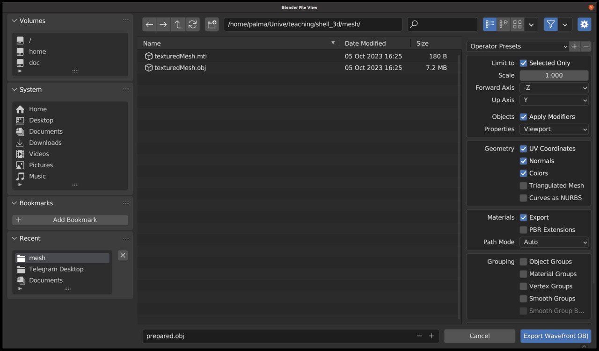

ADVANCED COMPUTER SCIENCE APPLICATIONS FOR CULTURAL HERITAGELaboratory
Ca' Foscari University
3D Data
What are the different 3D formats
| Format | Access | Characteristics |
| .STL | open | only triangle meshes, no colors |
| .PLY | open | only points, color but no texture |
| .OBJ | open | mesh + materials + texture |
| .FBX | closed | from AutoCad/Maya/Fusion 360 |
| .BLEND | open | specific for Blender full scenes |
| .GLTF | open | 3d scene + animations |
| .USDZ | closed | from Apple and Pixar for AR and VR |
| more | .. | .CAD, .3DS, .GLB, .X3D and more |
Meshlab
Visualizing Points and Triangles

Simplification
3D Scene
Composition of 3D assets
3D Assets
Scanning multiple objects
Most of the assets can be found online
3D models
Downloading
Blender
3D software for modelling, rendering and animating a scene
Interface
Camera and Lights

Importing
Blender Cheat-Sheet
| Action | Key Shortcut |
|---|---|
| Move an object | G (+X/Y/Z for axis) |
| Scale an object | S (+X/Y/Z for axis) |
| Shift to Camera | Ctrl + 0 (numpad zero) |
| Align view perspective to an axis | 1, 3, 5, 7 (numpad) |
| Rotate view perspective of 90 degrees | 2, 4, 6, 8 (numpad) |
Exporting
Visualization of 3D scenes
What can we do with a 3D scene, if screens are only 2D?
- 3D model viewer
- Virtual/Augmented Reality
- 2D renderings with different conditions
- Animation of the 3D scene (moving objects or camera)
Uploading to Sketchfab
Sketchfab is a good wrapper with many features:
- Online repository of 3D model
- Automatic conversion between different formats
- Annotations on the 3D model
Annotations
3D Model Viewer
| Android App | iOS App |
|---|---|
 |
 |
Virtual or Augmented Reality
What is the difference?
2D Rendering from a 3D Model
Rendering Animations
For the next time